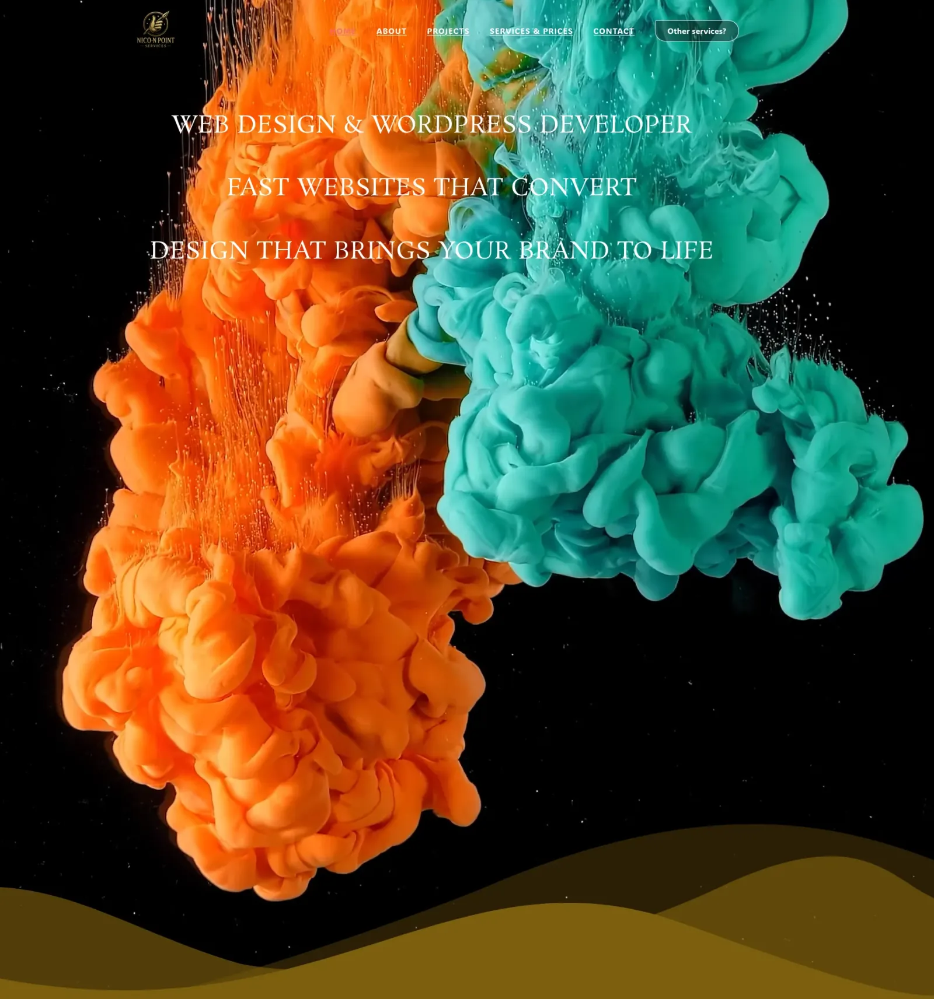

Företagswebbplatser
Sidor som förklarar dina tjänster, visar ditt arbete och gör kontaktuppgifter lätta att hitta.



WEBBDESIGN
Tydliga, praktiska webbplatser för småföretag och egenföretagare — med personlig kontakt från första idén till den färdiga webbplatsen.
DET HÄR KAN JAG HJÄLPA MED
Jag designar och bygger skräddarsydda webbplatser med olika program och onlineplattformar. Webbplatserna är optimerade för sökmotorer (SEO) och för användning på mobil, surfplatta och dator.
En webbplats ska göra det lätt för besökare att förstå vad du erbjuder och hur de kontaktar dig. Jag hjälper till att skapa en tydlig struktur för dina tjänster, foton och information som fungerar på datorer, surfplattor och telefoner.
Sidor som förklarar dina tjänster, visar ditt arbete och gör kontaktuppgifter lätta att hitta.
Ett praktiskt sätt att presentera avslutade projekt, foton och information om ditt arbete.
Ändringar av text, bilder och sidstruktur, med omfattningen överenskommen i förväg.
Praktisk hjälp med domäner och webbhotell eller med att avgöra vad som behöver ändras på en befintlig webbplats.
Berätta vad du behöver, var du finns och vilka praktiska önskemål du har. Vi diskuterar arbetet och en kostnadsuppskattning innan vi börjar. Om ytterligare arbete behövs pratar jag med dig först.
Skicka din nuvarande webbadress om du har en, en kort beskrivning av företaget och vad du vill att besökare ska kunna göra. Befintliga foton, texter och exempel hjälper oss att komma överens om omfattningen. Tredjepartskostnader för domäner, webbhotell eller betaltjänster diskuteras separat.
KUNDOMDÖMEN
Jag bad om en webbplats där tjänsterna jag erbjuder tydligt framgår. Efter ett kort samtal blev det tydligt vad jag ville ha. Allt görs i samråd, och om du vill ha något annorlunda justeras det. Helt toppen. Jag är supernöjd med resultatet. Tack Nico!Webbdesign
Nico förstod snabbt min stil och levererade en webbplats som känns tydlig, personlig och välkomnande. Snabbt arbete, bra kommunikation och ett professionellt resultat.Webbdesign
Dessa omdömen kommer från Google och har översatts från nederländska.
Lämna en Google-recension →
Tydliga, praktiska webbplatser för småföretag och egenföretagare — med personlig kontakt från första idén till den färdiga webbplatsen.